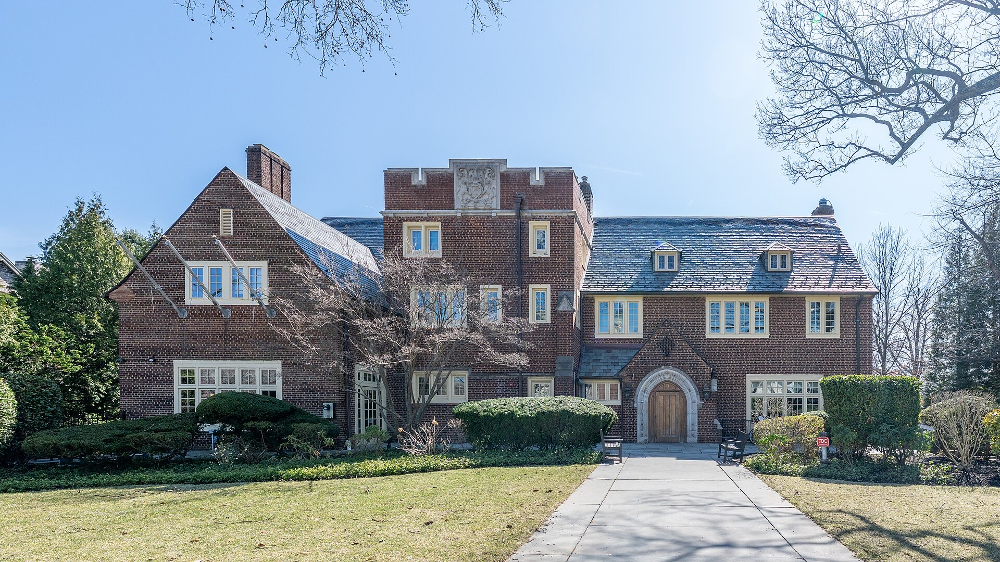
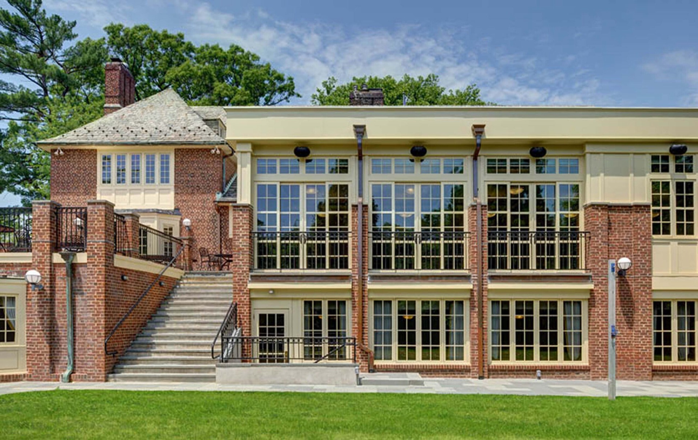
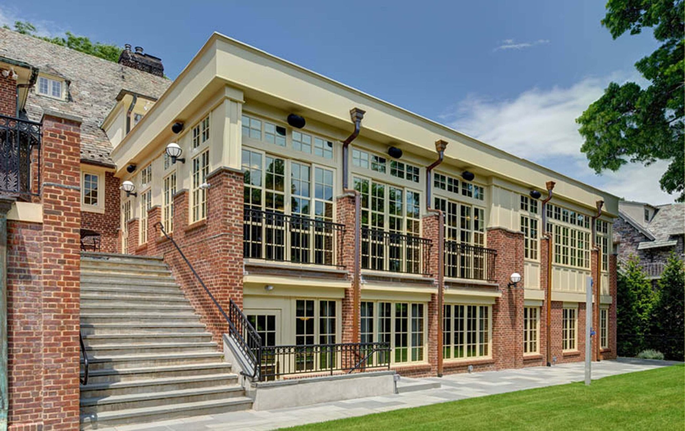

Spring 2027 · Date TBA
Spring 2027 · Date TBA
Founders’ Dinner
A formal dinner in the dining room honoring the four sophomores and Pop Little who started it all.

1902 — 2027
years of Tower
1902 — 2027
01The Anniversary
In 1902, four sophomores and a junior bet $400 on a club that didn’t exist yet. A hundred and twenty-five years later, Tower is still setting the table, and you’re invited.
03The Celebration
A year of gatherings for members, alumni and friends of the club. Dates and details will go out to members and the alumni list.
Spring 2027 · Date TBA
A formal dinner in the dining room honoring the four sophomores and Pop Little who started it all.
 Spring 2027 · Date TBA
Spring 2027 · Date TBA
An evening on the lawn and terrace for members, alumni and friends of the club.
Every Tower class is invited home for house tours, an archive exhibit, and an all-classes photo on the front walk.

Fall 2027 · Date TBAClose out the anniversary year with a brunch at the club before the game.

04125 Stories
For the anniversary we’re collecting 125 memories from members past and present: the dinner you still talk about, the friend you met at the table, the night something went gloriously wrong. Selected stories will be shared throughout the year.

05The 125th Fund
Every gift in the anniversary year helps preserve the clubhouse and keep Tower open to every member who wants a seat at the table.
Contributions to the Princeton Prospect Foundation / Tower Fund are tax-deductible.